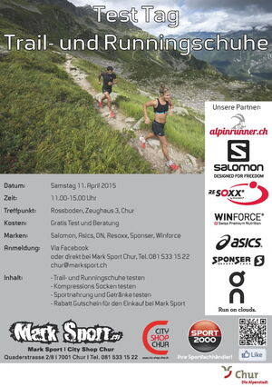

Alpinrunner
Testtag Trailrunning
Chur

Flyer zum Testtag von Mark Sport
Wir hatten die Möglichkeit schuhe zu testen von Salomon, On, und Asics. XSocks die Kompressionssocke konnte ebenfalls getestet werden und Winforce Produkte konnten probiert werden. Viele Läufer waren dabei und probierten die neuesten Produkte die dann zu vergünstgten Kontidionenn bei Marksport im Cityshop gekauft werden können.
Anschliessend liefen einige nach eine Runde nach Felsberg, Arella, Haldenstein und zurück zum Rossboden.